# load packages
library(tidyverse)
library(tidymodels)
library(colorspace)
library(broom)
library(cowplot)
library(distributional)
library(emmeans)
library(ggdist)
library(ggthemes)
library(marginaleffects)
library(ungeviz) # pak::pak("wilkelab/ungeviz")
# set theme for ggplot2
ggplot2::theme_set(ggplot2::theme_minimal(base_size = 16))
# set figure parameters for knitr
knitr::opts_chunk$set(
fig.width = 7, # 7" width
fig.asp = 0.618, # the golden ratio
fig.retina = 3, # dpi multiplier for displaying HTML output on retina
fig.align = "center", # center align figures
dpi = 300 # higher dpi, sharper image
)Visualizing uncertainty I
Lecture 12
Dr. Mine Çetinkaya-Rundel
Duke University
STA 313 - Spring 2026
Warm up
While you wait
Perceptions of probability
The problem: How do people interpret verbal probability phrases?
- “Highly unlikely” vs. “Almost no chance”
- “Probable” vs. “Likely”
- Do these phrases mean the same thing to everyone?
Two studies:
- Heuer (1999): 23 NATO military officers assigned percentages to probability phrases used in intelligence reports
- Zonination (2015): Reddit replication with 46 participants – won recognition at 2015 Kantar Information is Beautiful Awards
Heuer (1999)

Davatiz of the day: Zonination (2015)
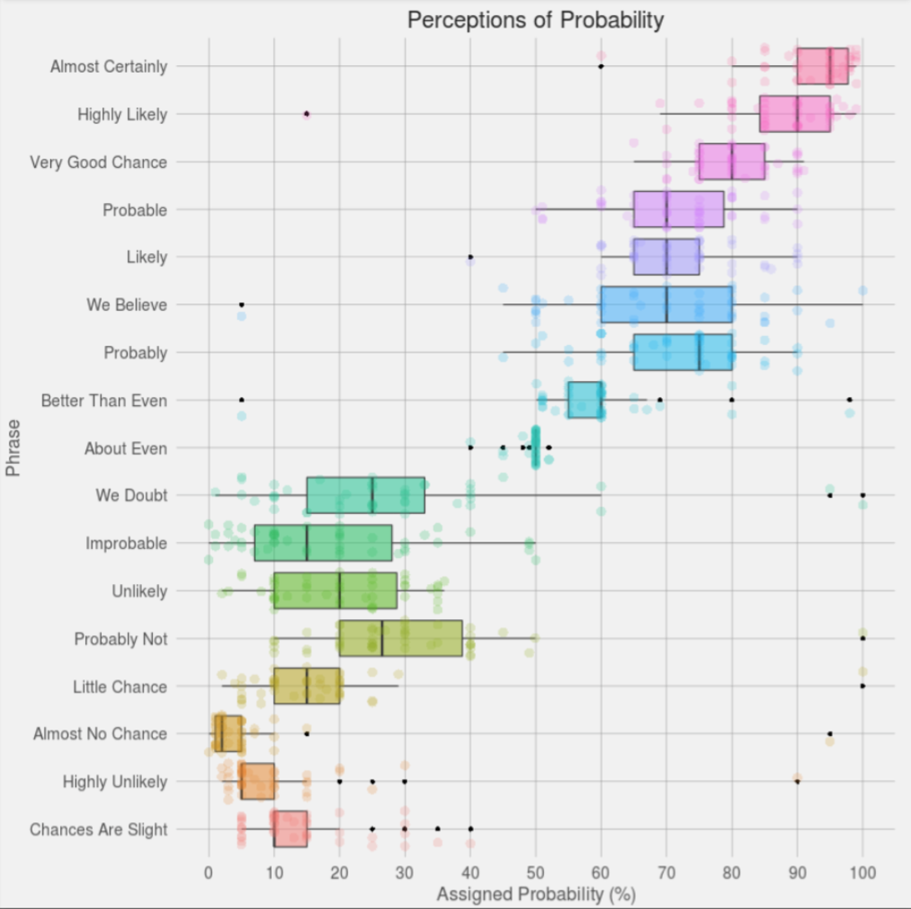Announcements
Review quiz feedback – sometimes I leave notes to help you catch up with material you missed
Project 1 presentations on Thursday in lab – be there on time!
Additional OH tomorrow (Tuesday) with me: 10-11:30 Old Chem 211C
Setup
Probability
Let’s imagine we’re playing a game
The odds are in your favor:
You have a 90% chance of winning!
playing…
Sorry, you lost. 😞
How does that make you feel?
We are bad at judging uncertainty
You had a 10% chance of losing
One in ten playing this game will lose
90% chance of winning is nowhere near a certain win
Visualizing set of possible outcomes
Possible outcomes from 100 individual games played
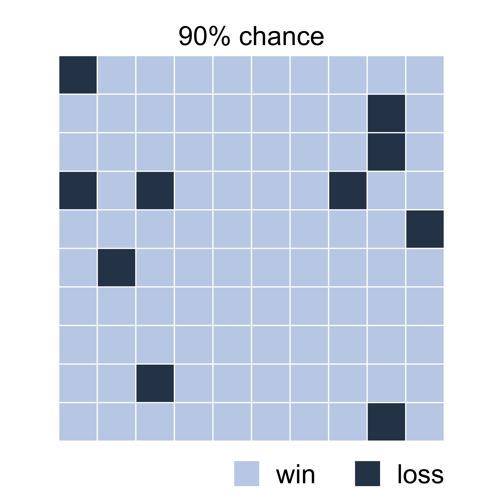Frequency framing
This type of visualization is called frequency framing
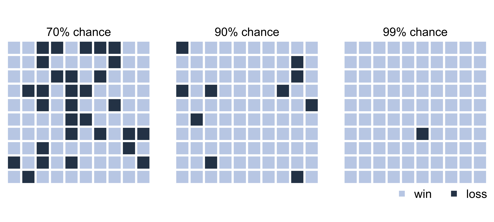Uncertainty
Visualizing uncertainty of point estimates
- A point estimate is a single number, such as a mean
- Uncertainty is expressed as standard error, confidence interval, or credible interval
Important
Uncertainty of a point estimate != variation in the sample.
Key concepts of statistical sampling
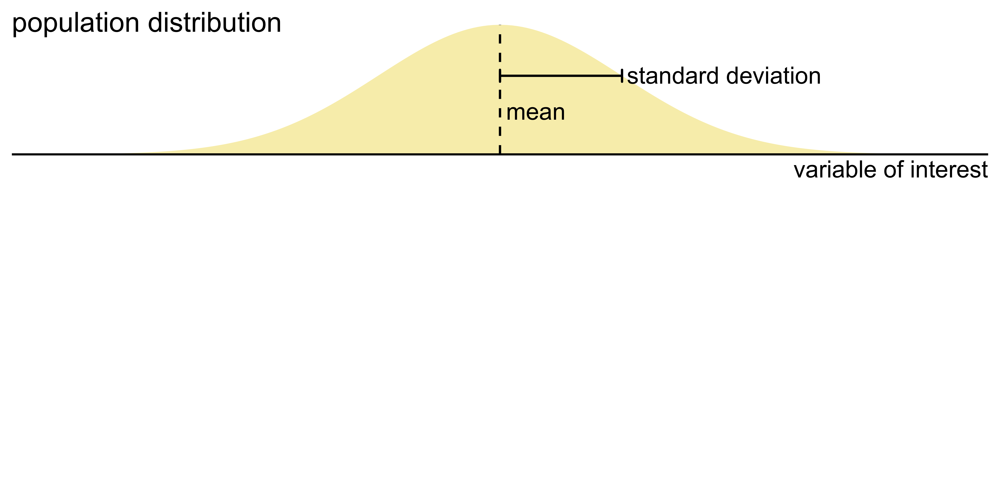
Key concepts of statistical sampling
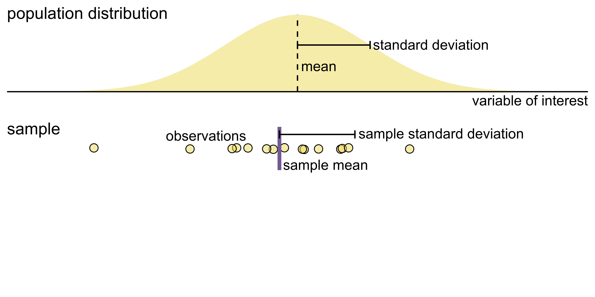
Key concepts of statistical sampling
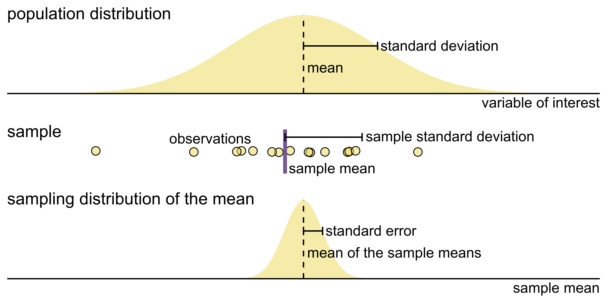
Confidence intervals
What does “95% confident” mean in the following sentence?
We are 95% confident that the confidence interval includes the true population mean.
Confidence intervals
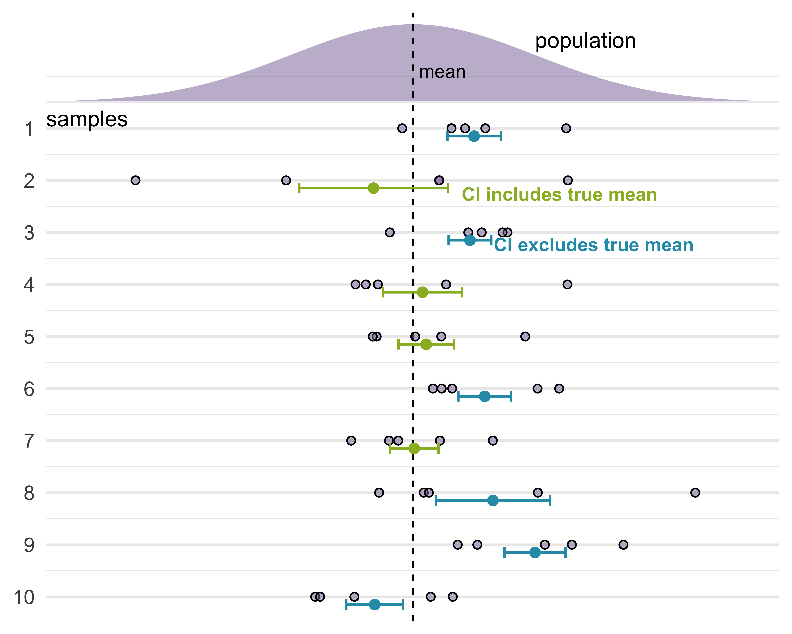
Data: Everest
2019 Everest expedition data from The Himalayan Database via TidyTuesday.
# A tibble: 1,001 × 21
year expedition_id member_id highpoint_metres sex success oxygen_used
<dbl> <chr> <chr> <dbl> <chr> <chr> <chr>
1 2019 EVER19101 EVER19101-01 8850 Male Yes With
2 2019 EVER19101 EVER19101-02 8850 Male Yes With
3 2019 EVER19101 EVER19101-03 8850 Male Yes With
4 2019 EVER19101 EVER19101-04 8850 Male Yes With
5 2019 EVER19101 EVER19101-05 8850 Male Yes With
6 2019 EVER19101 EVER19101-06 8850 Male Yes With
7 2019 EVER19101 EVER19101-07 8850 Male Yes With
8 2019 EVER19101 EVER19101-08 8850 Male Yes With
9 2019 EVER19102 EVER19102-01 8850 Male Yes With
10 2019 EVER19102 EVER19102-02 8850 Male Yes With
# ℹ 991 more rows
# ℹ 14 more variables: peak_id <chr>, peak_name <chr>, season <chr>, age <dbl>,
# citizenship <chr>, expedition_role <chr>, hired <lgl>, solo <lgl>,
# died <chr>, death_cause <chr>, death_height_metres <dbl>, injured <lgl>,
# injury_type <chr>, injury_height_metres <dbl>Data prep
Highest point reached on Everest in 2019
Includes only climbers and expedition members who did not summit
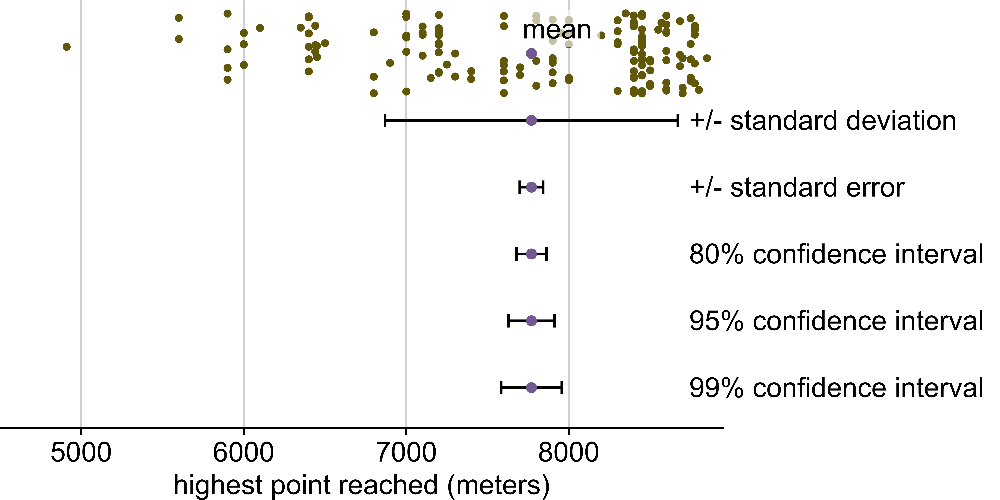Marginal effects
Marginal effects
Marginal effects are the average change in the outcome variable associated with a change in a predictor variable, while holding other variables constant.
Predicting highpoint from…
died, sex, success, and oxygen_used:
# A tibble: 5 × 5
term estimate std.error statistic p.value
<chr> <dbl> <dbl> <dbl> <dbl>
1 (Intercept) 8855. 7.72 1147. 0
2 diedYes -19.1 64.6 -0.295 7.68e- 1
3 sexFemale -15.6 21.7 -0.720 4.72e- 1
4 successNo -606. 21.6 -28.1 1.71e-128
5 oxygen_usedWithout -1508. 35.4 -42.5 3.51e-226Baseline climber
# A tibble: 5 × 5
term estimate std.error statistic p.value
<chr> <dbl> <dbl> <dbl> <dbl>
1 (Intercept) 8855. 7.72 1147. 0
2 diedYes -19.1 64.6 -0.295 7.68e- 1
3 sexFemale -15.6 21.7 -0.720 4.72e- 1
4 successNo -606. 21.6 -28.1 1.71e-128
5 oxygen_usedWithout -1508. 35.4 -42.5 3.51e-226- Survived
- Male
- Climbed with oxygen
- Summited
Marginal effects: Height reached on Everest
Term Contrast Estimate Std. Error z Pr(>|z|) S 2.5 %
died Yes - No -19.1 64.6 -0.295 0.768 0.4 -145.7
oxygen_used Without - With -1507.8 35.4 -42.535 <0.001 Inf -1577.3
sex Female - Male -15.6 21.7 -0.720 0.472 1.1 -58.2
success No - Yes -606.4 21.6 -28.113 <0.001 575.3 -648.7
97.5 %
107.6
-1438.4
26.9
-564.1
Type: numericMarginal effects to plot
# A tibble: 4 × 10
term contrast estimate std.error statistic p.value s.value conf.low
<chr> <chr> <dbl> <dbl> <dbl> <dbl> <dbl> <dbl>
1 died Yes - No -19.1 64.6 -0.295 7.68e- 1 0.381 -146.
2 oxygen_used Without -… -1508. 35.4 -42.5 0 Inf -1577.
3 sex Female - … -15.6 21.7 -0.720 4.72e- 1 1.08 -58.2
4 success No - Yes -606. 21.6 -28.1 6.76e-174 575. -649.
# ℹ 2 more variables: conf.high <dbl>, factor <fct>Errorbars
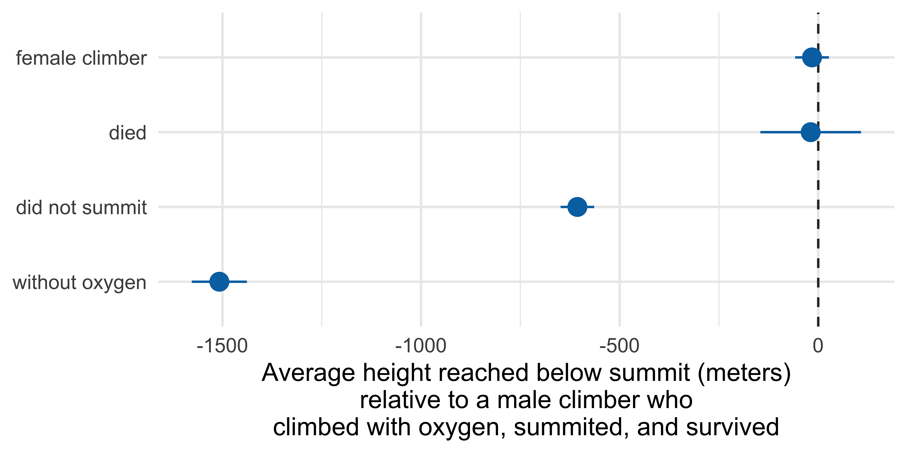Half-eye
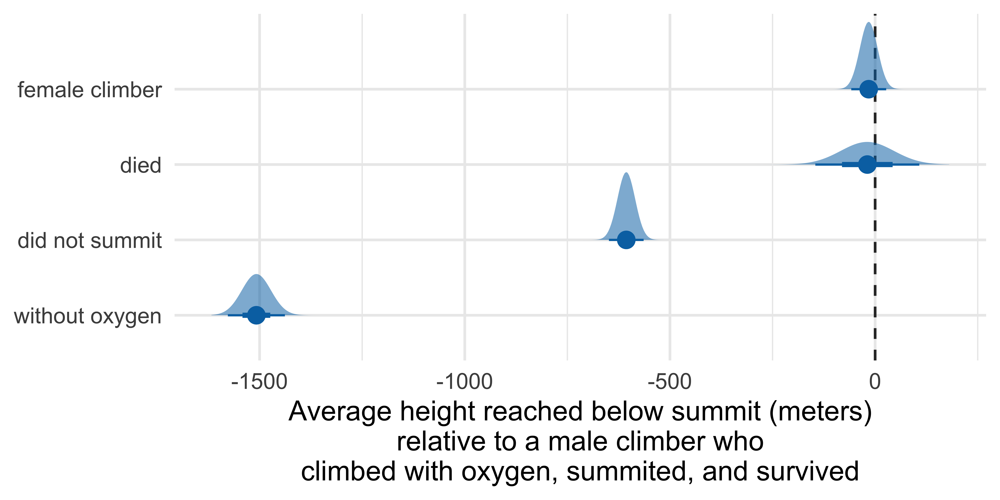Gradient interval
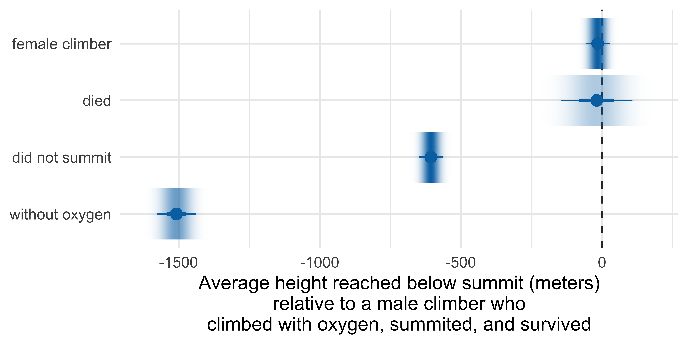Quantile dotplot
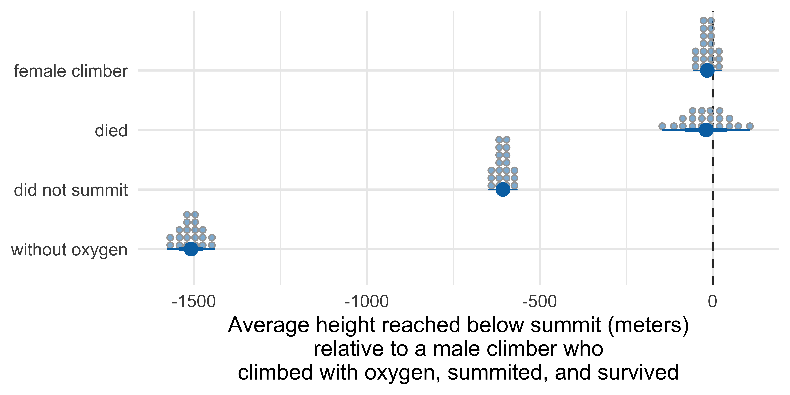Quantile dotplot
with fewer quantiles
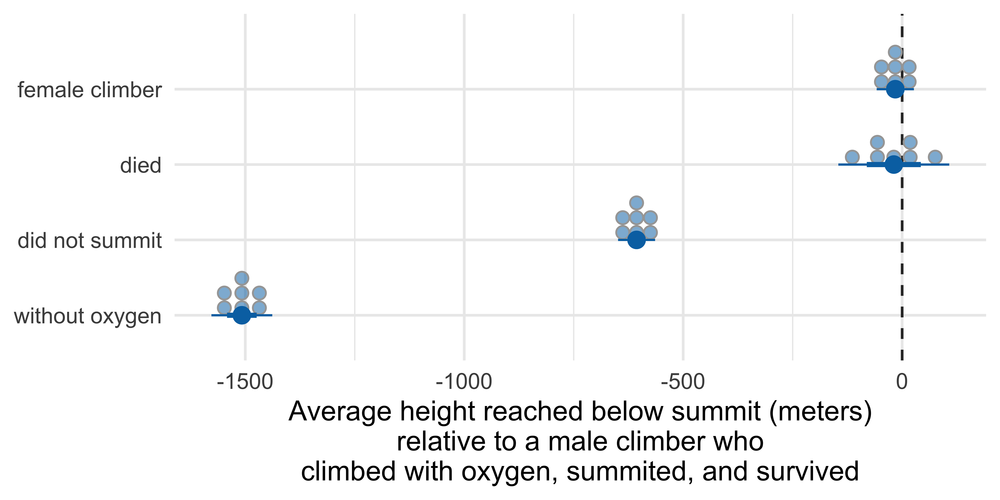Quantile dotplot
with more quantiles

Visualizing uncertainty in model estimates
Data: Life expectancy vs. GDP per capita
# A tibble: 3,088 × 5
country continent year life_exp gdp_percap
<chr> <chr> <dbl> <dbl> <dbl>
1 Afghanistan Asia 1950 42.7 1729.
2 Afghanistan Asia 1955 43.9 2010.
3 Afghanistan Asia 1960 45.0 2278.
4 Afghanistan Asia 1965 46.1 2360.
5 Afghanistan Asia 1970 47.1 2478.
6 Afghanistan Asia 1975 47.6 2228.
7 Afghanistan Asia 1980 43.7 2251.
8 Afghanistan Asia 1985 42.0 3068.
9 Afghanistan Asia 1990 53.8 2413.
10 Afghanistan Asia 1995 54.3 1689.
# ℹ 3,078 more rowsData prep
Life expectancy vs. log GDP per capita

Life expectancy vs. log GDP per capita
In ae-08, create a visualization that shows the relationship between life expectancy and GDP per capita across continents and years, including error bars to represent uncertainty in the slope lstimates.
Further reading and acknowledgements
- Acknowledgements: Slides from Visualizing uncertainty by Claus Wilke
- Further reading
- Fundamentals of Data Visualization: Chapter 16: Visualizing uncertainty
- Data Visualization—A Practical Introduction: Chapter 6.6: Grouped analysis and list columns
- Data Visualization—A Practical Introduction: Chapter 6.7: Plot marginal effects
- ggdist reference documentation: https://mjskay.github.io/ggdist/index.html
- ggdist vignette: Frequentist uncertainty visualization